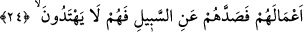

Çünkü bunun açıkça söylenmesinin sû-i edebden olduğunu bildi. Bir hadîste “Güzelin
en güzeli, güzel yüz, güzel ses ve güzel ahlâktır.”[57] buyrulmuştur.
Zünnûn dedi ki: “Allah ile ünsiyet eden her güzel şeyle ünsiyet etmiş demektir.
Çünkü her güzelin güzelliği, ezel güzelliğinin kaynağından çıkmıştır. Allah ile ünsiyet
etmeyenin, güzel şeylerle ünsiyeti mecâzîdir.
“Ve büyük bir tahtı olan bir kadınla” Yâni bu büyüklük Süleyman (a.s.)’ın tahtına
göre değil, kendi durumuna veya kendisinin benzeri kralların tahtlarına nisbetledir.
“__WORD__ asıl olarak üstü tavanlı şeye denir. Bununla “büyük divan” kasdedilir.
Belkıs’ın arşının genişliği seksene seksen arşın, yüksekliği de seksen arşın idi. Ön tarafı
kırmızı yakut ve yeşil zeberced ile kaplanmış altındandı. Arkası çeşitli mücevherlerle
süslenmiş gümüştendi. Dört ayağı vardı: Biri kırmızı yakuttan, biri yeşil yakuttan, biri
zebercedden, diğeri de incidendi. Tahtın levhaları altından idi. Üzerinde yedi ev vardı,
her evin kilitli bir kapısı vardı. Tahtın üzerinde ona lâyık halı ve döşemeler
bulunmaktaydı.
“Karşılaştım.” Hüdhüdün “gördüm” fiili yerine “__WORD__/
karşılaştım (buldum)” fiilini
tercih etmesi, kaybolduğu zaman Süleyman (a.s.)’ın hizmetiyle meşgul olduğunu ona
göstermek içindir. Bunu da sanki o kadın yitiğiymiş, kendisi de Süleyman (a.s.)’a arz
etmek üzere o kadının durumunu araştıran bir kimseymiş gibi göstererek ifâde etmiştir.
24. Onun ve kavminin, Allah’ı bırakıp güneşe secde ettiklerini gördüm. Şeytan,
kendilerine yaptıklarını süslü göstermiş de onları doğru yoldan alıkoymuş. Bunun
için doğru yolu bulamıyorlar.
“Onun ve kavminin, Allah’ı” Allah Teâlâ’ya ibâdeti bir tarafa “bırakıp güneşe secde
ettiklerini gördüm. Şeytan, kendilerine yaptıklarını süslü göstermiş de” yâni onlara
türlü küfür ve mâsıyetlerden güneşe tapma ve benzerleri gibi çirkin amellerini güzel
göstermiş de bu sebeple “onları doğru” hak “yoldan alıkoymuş” men etmiş.
Diğer yollara göre “__WORD__ gidilmesi mûtad olan yoldur.
“Bunun için” bu sebepten “doğru yolu bulamıyorlar.”
Müslim, Zikir, 73.
Münâvî, II, 417.